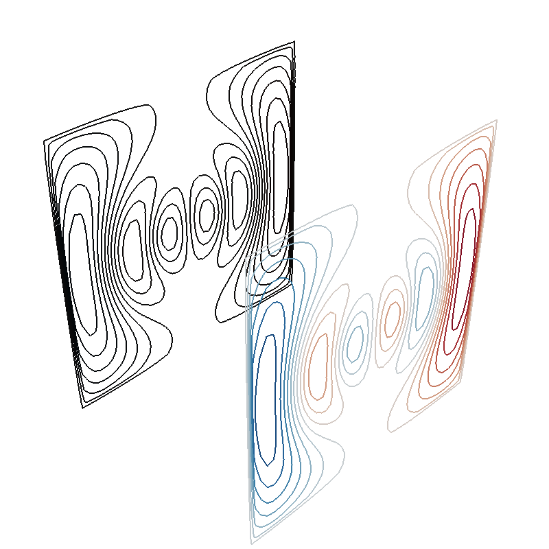

Note
Click here to download the full example code
Field distortion by a perfect mu-metal shield¶
import numpy as np
import trimesh
from mayavi import mlab
from bfieldtools.mesh_conductor import MeshConductor, StreamFunction
from bfieldtools.mesh_calculus import gradient
from bfieldtools.utils import load_example_mesh, combine_meshes
# This doesn't matter, the problem is scale-invariant
scaling_factor = 1
planemesh = load_example_mesh("10x10_plane_hires")
planemesh.apply_scale(scaling_factor)
# Specify coil plane geometry
center_offset = np.array([9, 0, 0]) * scaling_factor
standoff = np.array([0, 4, 0]) * scaling_factor
# Create coil plane pairs
coil_plus = trimesh.Trimesh(
planemesh.vertices + center_offset + standoff, planemesh.faces, process=False
)
coil_minus = trimesh.Trimesh(
planemesh.vertices + center_offset - standoff, planemesh.faces, process=False
)
joined_planes = combine_meshes((coil_plus, coil_minus))
planemesh = joined_planes
# Create mesh class object
coil = MeshConductor(mesh_obj=joined_planes, fix_normals=True)
# Separate object for shield geometry
shieldmesh = load_example_mesh("closed_cylinder_remeshed")
shieldmesh.apply_scale(15)
shield = MeshConductor(mesh_obj=shieldmesh, process=True, fix_normals=True)
N = 80
points = np.zeros((N * N, 3))
w = 12
X, Y = np.meshgrid(np.linspace(-w, w, N), np.linspace(-w, w, N), indexing="ij")
X += planemesh.vertices.mean(axis=0)[0]
Y += planemesh.vertices.mean(axis=0)[1]
points[:, 0] = X.flatten()
points[:, 1] = Y.flatten()
points[:, 2] += planemesh.vertices.mean(axis=0)[2]
def plot_plane():
mlab.triangular_mesh(
[X.min(), X.max(), X.max(), X.min()],
[Y.min(), Y.min(), Y.max(), Y.max()],
np.zeros(4),
np.array([[0, 1, 2], [2, 3, 0]]),
color=(0.1, 0.1, 0.1),
opacity=0.6,
)
fig = mlab.figure(bgcolor=(1, 1, 1))
s0 = mlab.triangular_mesh(
*shieldmesh.vertices.T, shieldmesh.faces, color=(0.5, 0.5, 0.5), opacity=0.3
)
s0.actor.property.backface_culling = False
s0.actor.property.ambient = 0.5
I_prim = np.load("../publication_software/Shielded coil/biplanar_streamfunction.npy")
sprim = StreamFunction(coil.vert2inner @ I_prim, coil)
m = max(abs(sprim))
s1 = sprim.plot(False, 16, vmin=-m, vmax=m)
s2 = sprim.plot(True, 20)
s2.actor.mapper.scalar_visibility = False
s2.actor.property.line_width = 1.2
# s2 = mlab.triangular_mesh(*planemesh.vertices.T, planemesh.faces, scalars=I_prim,
# colormap='RdBu')
# s2.enable_contours = True
# s2.contour.filled_contours = True
# s2.contour.number_of_contours = 20
s2.actor.property.render_lines_as_tubes = True
plot_plane()
scene = s0.module_manager
scene.scene.camera.position = [
39.154871143623325,
-40.509425675368334,
26.56155776567048,
]
scene.scene.camera.focal_point = [
4.239945673839333,
1.041549923485209,
-0.0005302515738243585,
]
scene.scene.camera.view_angle = 30.0
scene.scene.camera.view_up = [
-0.28276020498745635,
0.33658483701858727,
0.898196701154387,
]
scene.scene.camera.clipping_range = [16.139073445910277, 116.31572537292347]
scene.scene.camera.compute_view_plane_normal()
scene.scene.render()
- 
- %% Calculate primary potential matrix
Compute slightly inside
Out:
Computing scalar potential coupling matrix, 3184 vertices by 2773 target points... took 9.77 seconds.
mlab.figure()
s = mlab.triangular_mesh(
*shieldmesh.vertices.T, shieldmesh.faces, scalars=P_prim @ sprim, opacity=1.0
)
s.enable_contours = True
s.contour.filled_contours = True
s.contour.number_of_contours = 30
%% Calculate linear collocation BEM matrix
Out:
Computing scalar potential coupling matrix, 2773 vertices by 2773 target points... took 8.82 seconds.
%% Solve equivalent stream function for the perfect linear mu-metal layer
I_shield = np.linalg.solve(-P_shield, P_prim @ sprim)
# I_shield = P_prim @ I_prim
s_shield = StreamFunction(I_shield, shield)
g = gradient(s_shield, shieldmesh, rotated=True)
fig = mlab.figure(bgcolor=(1, 1, 1))
s0 = mlab.triangular_mesh(
*shieldmesh.vertices.T, shieldmesh.faces, color=(0.5, 0.5, 0.5), opacity=0.3
)
s0.actor.property.backface_culling = False
s1 = s_shield.plot(False, 256)
# s1.actor.property.opacity=0.8
s1.actor.property.backface_culling = False
# s2 = s_shield.plot(True, 10)
mlab.quiver3d(
*shieldmesh.triangles_center.T,
*g,
color=(1, 1, 1),
mode="arrow",
scale_factor=0.0000008,
scale_mode="vector"
)
# s1.contour.filled_contours = True
# s1.contour.number_of_contours = 30
# s2.actor.property.render_lines_as_tubes = True
# s1.actor.property.ambient = 0.2
scene = s1.module_manager
plot_plane()
scene.scene.camera.position = [
39.154871143623325,
-40.509425675368334,
26.56155776567048,
]
scene.scene.camera.focal_point = [
4.239945673839333,
1.041549923485209,
-0.0005302515738243585,
]
scene.scene.camera.view_angle = 30.0
scene.scene.camera.view_up = [
-0.28276020498745635,
0.33658483701858727,
0.898196701154387,
]
scene.scene.camera.clipping_range = [16.139073445910277, 116.31572537292347]
scene.scene.camera.compute_view_plane_normal()
scene.scene.render()
Out:
Computing scalar potential coupling matrix, 2773 vertices by 6400 target points... took 20.79 seconds.
Computing scalar potential coupling matrix, 3184 vertices by 6400 target points... took 22.85 seconds.
from bfieldtools.contour import scalar_contour
cc1 = scalar_contour(planemesh, planemesh.vertices[:, 2], contours=[-0.1])
cc1 = np.vstack(cc1)
cc1a = cc1[: cc1.shape[0] // 2]
cc1b = cc1[cc1.shape[0] // 2 :]
cc2 = scalar_contour(shieldmesh, shieldmesh.vertices[:, 2], contours=[-0.1])
cc2 = np.vstack(cc2)
cc2a = cc1[: cc2.shape[0] // 2]
cc2b = cc1[cc2.shape[0] // 2 :]
import matplotlib.pyplot as plt
import matplotlib.colors as colors
def truncate_colormap(cmap, minval=0.0, maxval=1.0, n=256):
new_cmap = colors.LinearSegmentedColormap.from_list(
"trunc({n},{a:.2f},{b:.2f})".format(n=cmap.name, a=minval, b=maxval),
cmap(np.linspace(minval, maxval, n)),
)
return new_cmap
cmap = plt.get_cmap("RdBu")
# cmap.set_over((0.95,0.95,0.95))
# cmap.set_under((0.95,0.95,0.95))
u0 = abs(
np.sum(U2_shield, axis=1).reshape(N, N)
) # Solid angle of the shield, zero outside
u0 /= u0.max()
u0[u0 < 1e-6] = 0
u1 = (U2_prim @ sprim).reshape(N, N)
u2 = (U2_shield @ I_shield).reshape(N, N) * u0
u3 = (u1 + u2) * u0
vmax = np.max(abs(u3)) * 0.99
levels = np.linspace(-vmax, vmax, 120)
levels = np.hstack((-np.max(abs(u3)), levels, np.max(abs(u3))))
p = plt.contourf(
X,
Y,
u1,
levels=levels,
cmap=cmap,
vmin=-vmax,
vmax=vmax,
norm=colors.SymLogNorm(linthresh=0.2 * vmax, linscale=0.8, vmin=-vmax, vmax=vmax),
)
plt.plot(cc1a[:, 0], cc1a[:, 1], linewidth=3, color="gray")
plt.plot(cc1b[:, 0], cc1b[:, 1], linewidth=3, color="gray")
plt.axis("image")
plt.axis("off")
xlims = p.ax.get_xlim()
plt.figure()
p = plt.contourf(
X,
Y,
u2,
levels=levels,
cmap=cmap,
vmin=-vmax,
vmax=vmax,
norm=colors.SymLogNorm(linthresh=0.2 * vmax, linscale=0.8, vmin=-vmax, vmax=vmax),
)
plt.plot(cc1a[:, 0], cc1a[:, 1], linewidth=3, color="gray")
plt.plot(cc1b[:, 0], cc1b[:, 1], linewidth=3, color="gray")
plt.plot(cc2[:, 0], cc2[:, 1], linewidth=3, color="gray")
plt.axis("image")
plt.axis("off")
p.ax.set_xlim(xlims)
plt.figure()
p = plt.contourf(
X,
Y,
u3,
levels=levels,
cmap=cmap,
vmin=-vmax,
vmax=vmax,
norm=colors.SymLogNorm(linthresh=0.2 * vmax, linscale=0.8, vmin=-vmax, vmax=vmax),
)
plt.plot(cc1a[:, 0], cc1a[:, 1], linewidth=3, color="gray")
plt.plot(cc1b[:, 0], cc1b[:, 1], linewidth=3, color="gray")
plt.plot(cc2[:, 0], cc2[:, 1], linewidth=3, color="gray")
plt.axis("image")
plt.axis("off")
p.ax.set_xlim(xlims)

Out:
/home/rzetter/Documents/bfieldtools/examples/publication_physics/mumetal_shield_example.py:239: MatplotlibDeprecationWarning: default base may change from np.e to 10. To suppress this warning specify the base keyword argument.
norm=colors.SymLogNorm(linthresh=0.2 * vmax, linscale=0.8, vmin=-vmax, vmax=vmax),
/home/rzetter/Documents/bfieldtools/examples/publication_physics/mumetal_shield_example.py:255: MatplotlibDeprecationWarning: default base may change from np.e to 10. To suppress this warning specify the base keyword argument.
norm=colors.SymLogNorm(linthresh=0.2 * vmax, linscale=0.8, vmin=-vmax, vmax=vmax),
/home/rzetter/Documents/bfieldtools/examples/publication_physics/mumetal_shield_example.py:272: MatplotlibDeprecationWarning: default base may change from np.e to 10. To suppress this warning specify the base keyword argument.
norm=colors.SymLogNorm(linthresh=0.2 * vmax, linscale=0.8, vmin=-vmax, vmax=vmax),
(-2.9992466721105764, 21.000753327889424)
Total running time of the script: ( 1 minutes 11.485 seconds)
Estimated memory usage: 2103 MB